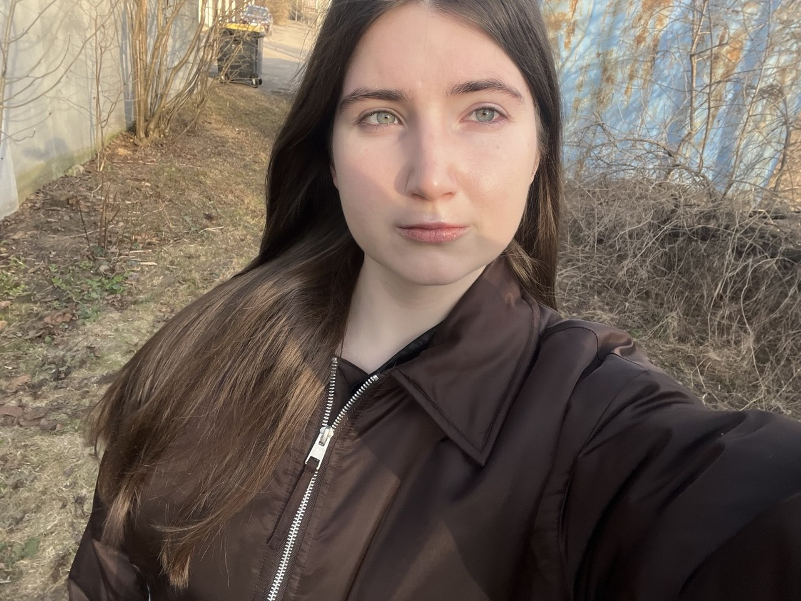

О создателе

Виктория Пермякова
Основатель проекта «Красный Волк»Меня зовут Виктория, мне 16 лет. Я студентка и с самого детства увлекаюсь дикой природой Дальнего Востока. Проект «Красный Волк» родился из моей личной боли — в 2024 году я впервые узнала, насколько мало людей знают об этом уникальном и очень красивом хищнике, который находится на грани исчезновения.
Я решила не просто наблюдать, а действовать. Самостоятельно изучила литературу, связалась с сотрудниками Лазовского заповедника, начала собирать информацию о красных волках через фотоловушки и волонтёров. Этот сайт — моя курсовая работа, но в первую очередь это настоящее дело моей жизни.
Я верю, что даже один человек может привлечь внимание сотен и тысяч людей к важной проблеме. Сейчас я занимаюсь развитием проекта: веду контент, общаюсь с заповедниками, собираю средства на помощь подопечным и пытаюсь донести до людей, что сохранение природы — это не модный тренд, а наша общая ответственность.
Если вам близка тема сохранения редких видов, если вы хотите помочь или просто поделиться своими мыслями — пишите мне. Буду рада знакомству!